|
|
|
Let us assume that the amount (property) of conveying, a scalar M, is presented at a certain moment as a continuous 3D spatial distribution included into V volume, with a certain position against a reference system. It’s worth reminding that a spatial distribution of an amount is also known as field, in mathematics; depending on the distributed quantity (either scalar or vectorial), we shall have a scalar or vectorial field.
In our case, the scalar field of amount M is defined as a primary spatial distribution, in which each element of volume dV on the coordinates x,y,z is related to the scalar quantity:
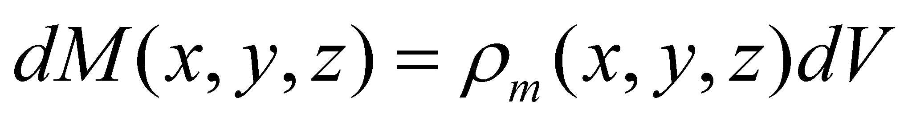 (5.2.1.1)
where
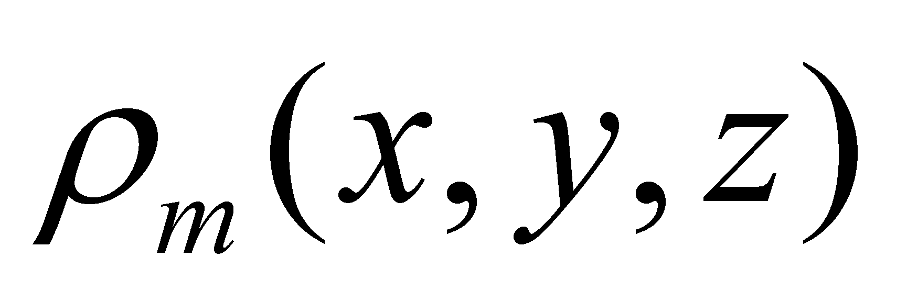
is the volume density of the continuous and even distribution of
amount M, on the volume element dV, which tends to zero
and “surrounds” a point with the position vector
 .
As we may notice from the above-mentioned relation, the distribution
is static for the moment, the spatial coordinates of the distribution
do not depend on time. Under these static conditions, the total
quantity21
of amount M from volume V makes-up the stockpile
of this amount (see stockpile definition from chapter 2).
.
As we may notice from the above-mentioned relation, the distribution
is static for the moment, the spatial coordinates of the distribution
do not depend on time. Under these static conditions, the total
quantity21
of amount M from volume V makes-up the stockpile
of this amount (see stockpile definition from chapter 2).
If the distribution is moving, the position of each distribution element shall become variable. In the overview of this chapter, it was mentioned that the motion process of an object is characterized by the motion intensity, as an existential attribute, which is also better known as the velocity modulus, velocity which, according to the classic theory22, is given by the following relation:
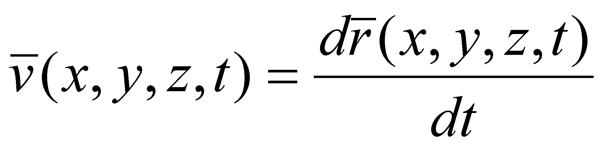 (5.2.1.2)
The motion of a continuous distribution is therefore represented by means of the connection (association) of a vector displaying the motion intensity and direction to each assigned value (more exactly, at each element of the spatial primary distribution). However, in each point (virtual, dimensionless point of the distribution), there is an amount which moves at the same time with it, therefore, we shall finally have another amount which represents the transport process of the attribute M in a certain point.
Definition 5.2.1.1: The flux density vector (FDV) of an amount M is the following quantity:
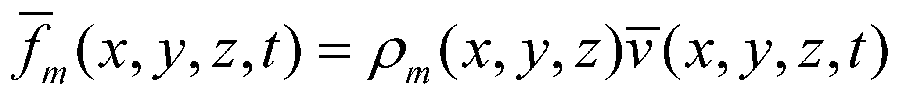 (5.2.1.3)
Comment 5.2.1.1: According to the virtual approach (based on dimensionless points) of the flux, due to the infinite number of these points in any spatial interval, a nonsense occurs concerning the value of the distributed amount on each support element of primary distribution - a singular value from set {R}, namely an AAV. If a support interval, regardless its size, consists of an infinity of singular values, the logical conclusion is that a finite quantity of the assigned attribute, divided to an infinite number of singular values leads to a null value of the attribute associated to each singular value. But the question is how such a null value can lead, by means of addition (integration) to a result different from zero? This nonsense vanishes within the realizable objectual approach, where the support of any distribution contains a finite number of singular normal values.
This new amount - FDV - is a local characteristic of the motion of a spatial distribution. One may notice that through the attachment of a vector which represent the transport velocity to each element of the primary distribution from the volume V (occupied by the initial scalar distribution M), the scalar field becomes a vectorial field, the distributed amount being this time FDV of the amount M.
According to the vectors classification made in chapter 4, FDV is a carrier vector, which conveys the amount attached to its application point, from the initial point, up to the final point of the flux line (which shall be defined a little bit later). The modulus of this vector represents the local surface-density (see annex X.15) of the transport process, the existential attribute of the abstract object flux in a virtual point from the space.
In accordance with the virtual approach (and with the realizable one), there are two ways for the approach of this vector field, variable both in time and space, which is considered as a representation of a flux:
Analysis on the motion of a single object (in this case, of a single volume element of the scalar distribution) on a temporal interval of the flux existence;
Analysis on the spatial distribution of the ensemble of objects belonging to the vector field (namely, of FDV set) at a certain moment, after the flux initiation.
The first method, also known as Lagrange method, provides a temporal distribution of the spatial position of a single object involved in the flux, distribution which according to the current language is called trajectory (pathway). This pathway of a carrier vector is, according to the classic theory, a continuous curve in space, at which that particular vector remains permanently tangent, and which is called a flux line (or a flow line).
The second method, also known as Euler method, provides a snapshot at tk moment of the total or partly spatial distribution of the set of objects which are in motion. This snapshot is a global state of the flux, at tk moment, a steady vector field in 2D or 3D space. If this vector field is crossed by a steady surface Σ with a known equation (distribution relation) and area (reference area), we shall get the superficial distribution of FDV of that particular flux at the moment tk, on the surface Σ.
Definition 5.2.1.2: The area of a normal Σ surface in any point on 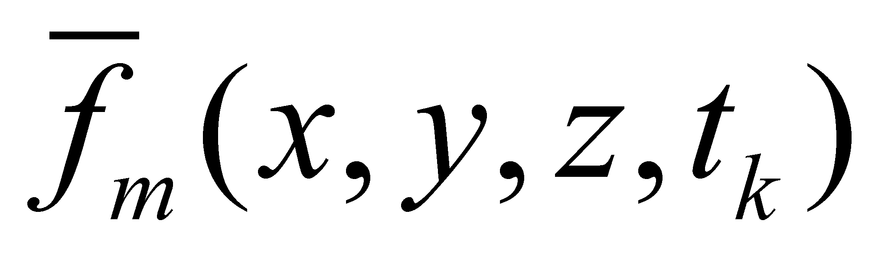 and which contains the set of all the flux lines of the flux F, is named effective area (synonym - effective section) of this flux.
Considering the local elements of this
distribution: the position vector
 of
a point located on Σ, “surrounded” by an area
element
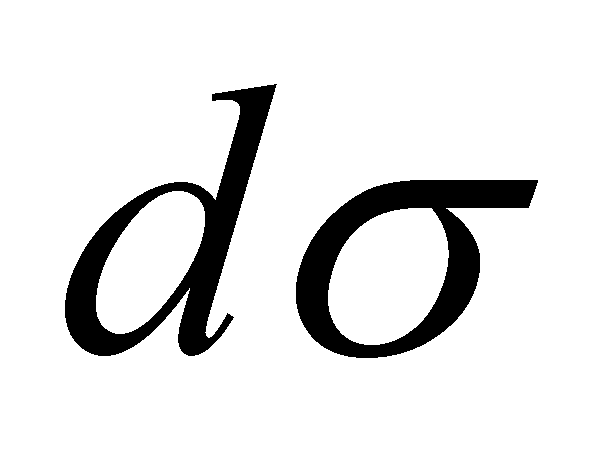,
of
a point located on Σ, “surrounded” by an area
element
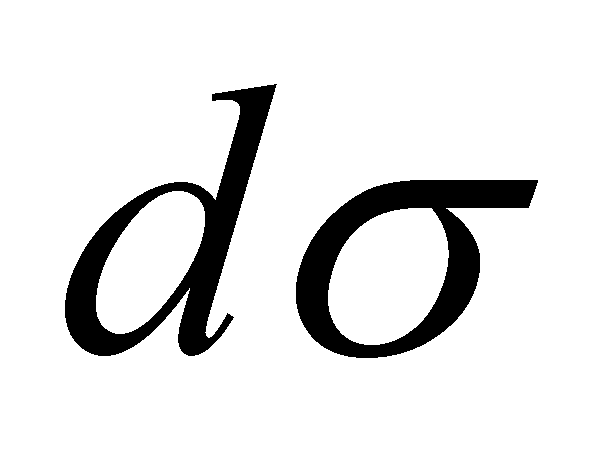,
 ,
normal line on Σ in that point and
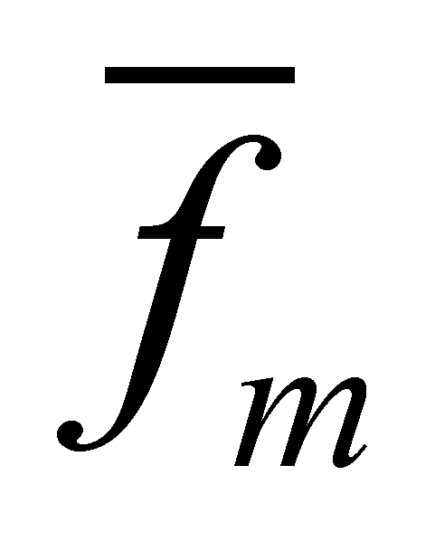,
FDV in the same point (given by the relation 5.2.1.3). For
simplifying these relations, we shall not mention their spatial
coordinates, knowing that these coordinates make-up an invariant
distribution for the points on Σ. According to the vector field
theory, there is the following relation (see annex X.8):
,
normal line on Σ in that point and
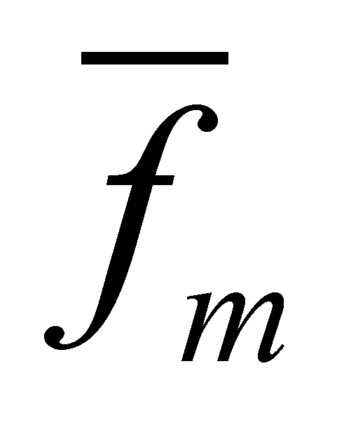,
FDV in the same point (given by the relation 5.2.1.3). For
simplifying these relations, we shall not mention their spatial
coordinates, knowing that these coordinates make-up an invariant
distribution for the points on Σ. According to the vector field
theory, there is the following relation (see annex X.8):
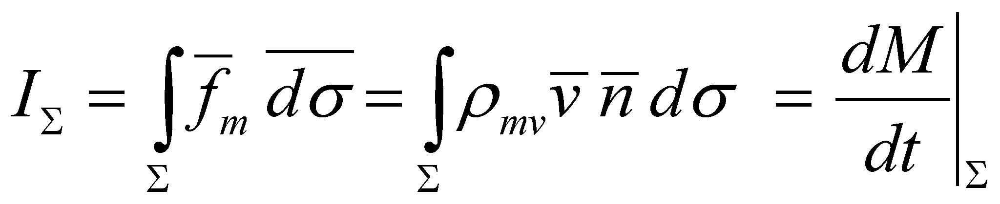 (5.2.1.4)
which defines the flux of vector through the area Σ. According to this interpretation version, the flux is a scalar and represents the quantity from the amount M which crosses the area Σ in the temporal interval dt.
Attention! This flux definition is not valid according to the objectual philosophy, because the definition 5.2.1 is the valid one in this paper, which states that the flux is a distributed process, that is a vector field rather than a scalar one. In exchange, the relation 5.2.1.4 is also valid in this paper, but it defines the global flux intensity through the area Σ.
Comment 5.2.1.2: As it is also stated in annex X.3, as compared to the mathematic version of the flux definition of a vector, the concept of flux cannot be approached in this paper if there is no displaceable amount. Based on the mathematic version, the vector whose flux is computed may be any free vector, such as the velocity 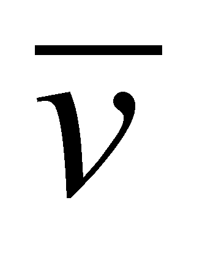; according to the objectual version, if the vector is not attached to a displaceable scalar amount (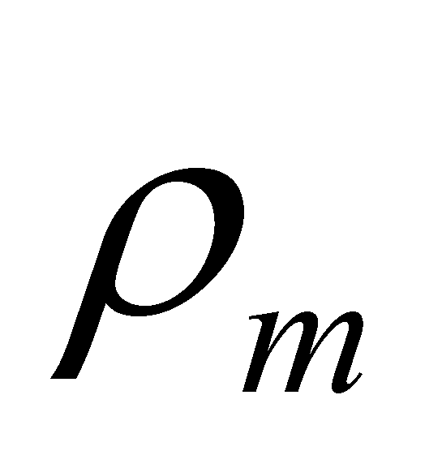 in the above-mentioned case) the flux concept does not make sense any more. In accordance with the objectual version, the vector 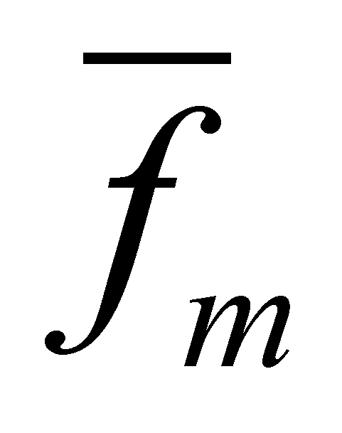, whose flux must be computed, is always a carrier vector.
Under the above-mentioned conditions, if the intersection of the volume dV with a calculus area Σ is , knowing that the inner vector distribution is even, an elementary flux results, a uniform vector distribution of FDV, with an effective area . The vector distribution is uniform if both the modulus and the vectors direction are invariant (field with parallel vectors belonging to the same modulus).
21 We are dealing with quantity and stockpile only in case of the cumulative attributes (extensive), for which the addition, respectively, integration make sense.
22 Theory which allows the simultaneous existence of the position and velocity of an object at the same time.
Copyright © 2006-2011 Aurel Rusu. All rights reserved.